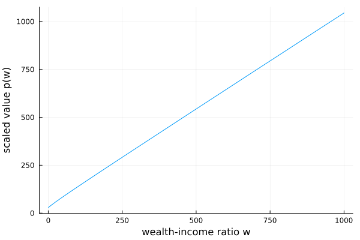

Wang–Wang–Yang (2016): consumption and saving with recursive utility
Wang, Wang, and Yang (2016) study optimal consumption and saving when labor income follows a geometric Brownian motion, $dY = \mu Y\,dt + \sigma Y\,dZ$, and the household has recursive (Epstein–Zin) preferences with elasticity of intertemporal substitution $\psi$ and risk aversion $\gamma$. Wealth accumulates as $dX = (r X + Y - C)\,dt$ subject to a borrowing limit. Because income is a GBM and preferences are homothetic, the value function is homogeneous and the problem collapses to a single ODE in the wealth-to-income ratio $w = X/Y$. Writing $p(w)$ for the scaled value function — equivalently, total wealth (financial plus human) per unit of income — it solves
\[0 = \left(\frac{(r + \psi(\rho - r))\,p'^{\,1-\psi} - \psi\rho}{\psi - 1} + \mu - \tfrac{\gamma\sigma^2}{2}\right) p + \bigl((r - \mu + \gamma\sigma^2)\,w + 1\bigr)\, p' + \tfrac12 \sigma^2 w^2\left(p'' - \gamma\,\frac{p'^{\,2}}{p}\right),\]
with the consumption–income ratio recovered from $c = (r + \psi(\rho - r))\, p\, p'^{-\psi}$.
The model
using EconPDEs, Plots
Base.@kwdef mutable struct WangWangYangModel
μ::Float64 = 0.015
σ::Float64 = 0.1
r::Float64 = 0.035
ρ::Float64 = 0.04
γ::Float64 = 3.0
ψ::Float64 = 1.1
wmin::Float64 = 0.0
wmax::Float64 = 1000.0
endMain.WangWangYangModelWe upwind on the physical wealth drift $\mu_w$ of the controlled state, falling back to $\mu_w = 0$ when the borrowing constraint binds.
function (m::WangWangYangModel)(state::NamedTuple, u::NamedTuple)
(; μ, σ, r, ρ, γ, ψ, wmin, wmax) = m
(; w) = state
(; p, pw_up, pw_down, pww) = u
# Newton can try negative marginal values, so cap implied consumption instead of flooring derivatives.
cmax = 100.0 * (1 + max((r - μ + σ^2) * w, 0.0))
# Upwind on the physical wealth drift of the controlled state process.
c_up = pw_up > 0 ? min((r + ψ * (ρ - r)) * p * pw_up^(-ψ), cmax) : cmax
μw_up = (r - μ + σ^2) * w + 1 - c_up
if μw_up >= 0
pw = pw_up
c = c_up
μw = μw_up
else
c_down = pw_down > 0 ? min((r + ψ * (ρ - r)) * p * pw_down^(-ψ), cmax) : cmax
μw_down = (r - μ + σ^2) * w + 1 - c_down
if (μw_down <= 0) && (w > wmin)
pw = pw_down
c = c_down
μw = μw_down
else
# If the two candidates straddle zero OR drift is negative at minimum asset threshold
# we impose drift μw = 0.
μw = 0.0
c = 1 + (r - μ + σ^2) * w
pw = (c / ((r + ψ * (ρ - r)) * p))^(-1 / ψ)
end
end
# At the top, I use the solution of the unconstrainted, i.e. pw = 1 (I could also do reflecting boundary but less elegant)
pt = - ((((r + ψ * (ρ - r)) * pw^(1 - ψ) - ψ * ρ) / (ψ - 1) + μ - γ * σ^2 / 2) * p + ((r - μ + γ * σ^2) * w + 1) * pw + σ^2 * w^2 / 2 * (pww - γ * pw^2 / p))
return (; pt)
endSolving it
The state $w$ runs from the borrowing limit to a large upper bound on a grid that is denser near the constraint. The initial guess $p = 1 + w$ reflects total wealth as financial plus one unit of human wealth, and the boundary condition $p'(w) = 1$ pins the marginal value of wealth at both ends.
m = WangWangYangModel()
stategrid = (; w = range(m.wmin^(1/2), m.wmax^(1/2), length = 100).^2)
yend = (; p = 1 .+ stategrid[:w])
result = pdesolve(m, stategrid, yend, bc = (; pw = (1.0, 1.0)))Residual_norm: 1.921518502320282e-9
Zero: OrderedDict(:p => [28.682097539757734, 28.81810992130735, 29.225211041294926, 29.899312229482053, 30.83370334070867, 32.02017611582232, 33.45012435432591, 35.115436591739815, 37.0091587089428, 39.11769446329835 … 871.2079787816059, 889.7125990905628, 908.418160789445, 927.3244687151565, 946.4313060686602, 965.7384327453177, 985.2455835428799, 1004.9524662399169, 1024.8587595370934, 1044.9641108533012])
The solution
The scaled value $p(w)$ is increasing and concave in the wealth-to-income ratio:
ws = stategrid[:w]
plot(ws, result.zero[:p]; xlabel = "wealth-income ratio w", ylabel = "scaled value p(w)", legend = false)
$p(w)$ measures total wealth — financial plus human — per unit of income. Its intercept $p(0)$ is the value of human wealth (the capitalized income stream) for a household stuck at the borrowing constraint, and its slope approaches one as financial wealth grows and human wealth becomes negligible in comparison. The concavity near $w = 0$ reflects the shadow value of the borrowing constraint: an extra unit of wealth is worth most to a constrained household, which is exactly where the precautionary motive and the marginal propensity to consume are highest.
This page was generated using Literate.jl.